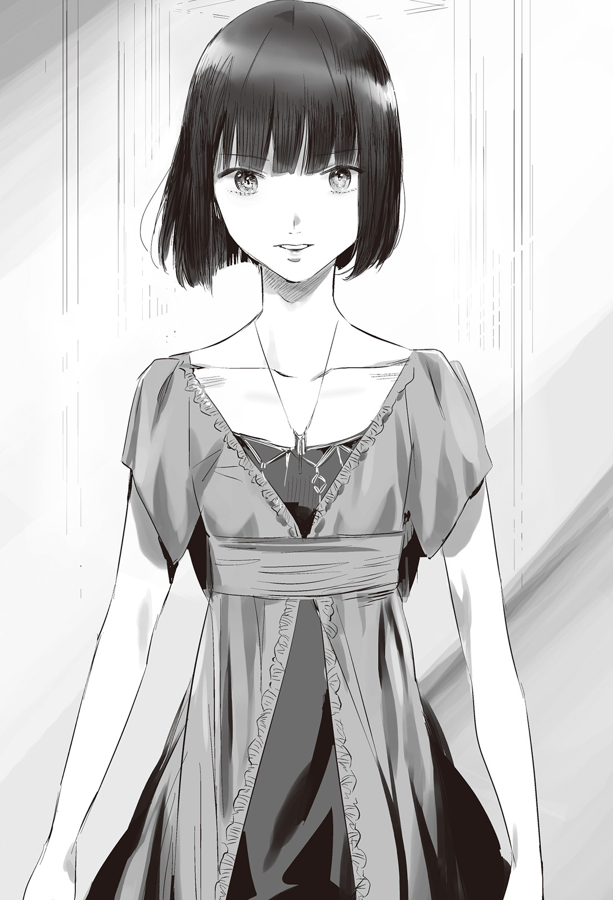

Chapter 3 – The Beast King’s Night Attack
.
Part 1
It was chronologically two days after the battle of Angelholm.
The grand army of 100000 troops under the command of Isaac Valberg was going to attack the field battle encampment of Ramillies that was located at Siracusa in northern Trystovy.
「My troops of the glorious Answerer Kingdom. Soldiers of god who are blessed by the pope. Even if you die in battle, your soul will surely be invited to heaven by god.」
Answerer Kingdom soldiers who were almost all believers of Europa religion responded with jubilation.
「Our king, his majesty Alexei III is bestowed by the god with the duty to bring unification and order to this continent. His majesty has spoken that at the dawn of this continent’s unification, a lavish reward will definitely await for everyone here.」
Even louder cheers than before were raised in respond to this.
From time memorial, just cause and reward were the greatest factors in heightening the soldiers’ morale.
It was uncouth, but the effect was just as Isaac wished.
「All troops forward!」
「UOOOOOOOOOOOOOOOOOOOOOOOOOOOOH!」
With a morale that pierced the heaven, Answerer Kingdom army finally ran down Dyatlov Mountain Range to head to Siracusa.
.
「……How naïve those idiots are.」
Ramillies who had already obtained the information from the scouting party in hot-air balloon had diligently placed traps on their route.
In the first place, mountain path wasn’t created for an army of 100000 to pass through.
In front of Siracusa there was a vast cultivated land where a large army could barely be stationed. Although in order to arrive there, the army first had to march in a line that was like a long snake.
They could also forcefully travel through trackless path, however putting aside the lightly equipped infantries, it was impossible for the infantries equipped with pike, the cavalries, and the artillery to pass through such path.
It was a salvation that the army of Europa Church was using another route at the north.
What was so difficult about the marching of a large army was the unending vast pressure from behind. If a congestion occurred at one spot, the soldiers at the back wouldn’t know about it and continued walking.
As the result if some kind of problem occurred, the soldiers at that spot would get sandwiched from the back and front.
「They are leisurely marching sluggishly like that……do they think that we are just going to quietly watch until they come attacking us?」
Gerhart who was wearing a camouflage of plants was smiling wryly with a face that was covered in mud.
「Well, if you have an army of 100000, it can’t be helped that you will get big-headed right?」
「That’s the only thing that I’m feeling jealous about. Our country will be ruined if we mobilize that many troops.」
Trystovy Kingdom still hadn’t recovered from the wound of long civil war. And so if they carelessly mobilized a lot of troops, the food productivity and infrastructure would collapse.
Due to the new type of wheat M-10 that Masaharu developed, one day a population explosion would occur, but that was still a matter of more than ten years in the future. At the very least during this war Trystovy Kingdom would have to make do with few soldiers.
Even so there wasn’t any feeling of grim resolve from them.
They believed that they would surely win if they fought.
The feeling of loyalty and worship that they harbored toward Baldr was just that great.
「Well, they have run out of luck because they got our old man(Ramillies) as enemy.」
Gerhart laughed with genuine pity.
In the past Ramillies was called as a model knight, but at the same time he was also an old soldier who had survived disastrous frontlines as a mercenary.
He had the full knowledge about the tactics of the battlefield and the opponent’s weak points.
Not only that, recently he also received Baldr’s education and devoted himself to absorb new technique and tactics.
He wondered just how long that old man was planning to stay active in military.
「Of course──till I die.」
Just now it felt like he heard a line of Shinsengumi’s third unit’s captain from somewhere, but surely it was just his imagination.
Gerhart pulled himself together and observed the march of Answerer Kingdom army from the bush.
When the vanguard was about to arrive at Siracusa’s plain soon, Gerhart made his move.
「Ignite.」
Gerhart gave the order to several hiding places through radio.
Without any delay, oil flowed from the pipes that had been buried underground beforehand and fires rose to sandwich Answerer Kingdom army.
「Ambush?」
「From the scope of the fires, there must be several thousands of them around here.」
「What underhanded act! Tell the artillery and gunners to step back! Dispatch the infantries and crush the ambush troops!」
「The fires are really intense. It’s possible that the soldiers will get swallowed by the fires if they move carelessly……」
「We can’t just allow several thousand ambush troops to move unchecked!」
Isaac yelled angrily at his adviser’s timidity.
Certainly it was extremely dangerous to send soldiers toward the source of large scale fires.
However they absolutely could not permitted the ambush troops that the enemy dispatched to move freely.
Even so, obviously Answerer Kingdom had also been vigilant toward the possibility of ambush.
They should have place as many infantries as possible along the way to search for any sign of enemy.
It was an outrageous carelessness for them to fail to detect several thousand enemies.
However, the number of Gerhart and his men actually didn’t even reach a hundred.
The minimum amount of personnel was needed just to control the traps that had been set up beforehand. A skilled person wouldn’t find it hard to slip through the enemy surveillance.
「Now then, let’s skedaddle immediately from here. My condolences!」
The amount of oil itself wasn’t that much, but once the forest began to burn, it would take time until the fire was extinguished.
Furthermore Dyatlov Mountain range was the border between Grand Duchy Tenedora and Trystovy Kingdom. From Answerer Kingdom’s perspective this area was already a foreign country.
Naturally Trystovy Kingdom had the locational advantage. They had learned about all the animal trails and water sources in the forest.
In contrast troops who got lost and died in fire kept appearing from among the infantries that were recklessly ordered to go investigate inside the flame.
Furthermore even though they had made such sacrifice, they were unable to find even the shadow of the ambush troops.
「What are you all doing!? Everybody is useless!」
Isaac’s face went red and he screamed because his army had unexpectedly stumbled right from the start.
「……This is no good. We have gotten separated from the rear.」
Around 30000 of Answerer Kingdom army that had gone ahead formed a square formation at the plain in front of Siracusa and waited for the main force’s arrival.
They knew that the army of Trystovy Kingdom numbered around 30000, but General Simeon who was entrusted with the role of advance guard didn’t have the guts to attack the enemy with equal number.
In the past he was in a relationship of superior and subordinate with Isaac. He was categorized as a senior in Answerer Kingdom military.
He was an old general who would loyally follow the order right to the letter. There were many white hairs on his head and there were deep wrinkles engraved on the outer corner of his eyes.
To be honest he held some doubt toward the kingdom’s personnel affairs.
Isaac was certainly an excellent officer, but Simeon thought of him as a type of person who would lost his head over power.
Even if he could act as an on-site commander, it was dangerous to entrust someone like him with the role as the commander-in-chief of an expedition army.
It would be great if his desire didn’t steer him to a wrong direction, Simeon thought. But then right after that this fire incident occurred.
It was clearly a trap that was prepared by Trystovy Kingdom army.
And there was no way the trap of Trystovy Kingdom army would end with just those fires.
「Be on your guard to the whole surrounding! Prepare to intercept the enemies with the magicians at the center!」
Most likely the enemy’s aim was to crush them one by one while they were separated like this.
The enemy would want to crush Simeon’s army before the main force behind them arrived.
There would be no meaning for the enemy to take risk to set fire on large scale like that if they weren’t going to do that.
「I can’t show any disgrace at this kind of place.」
Ramillies was impressed by Simeon’s composure in maintaining the formation and waiting for his attack.
「It seems that man hasn’t grown old pointlessly.」
As expected, even Ramillies would have difficulty if 30000 soldiers firmly hardened their defense to wait for his attack.
However that was only the case if he fought them head on.
「The history has changed. There is no more turn for old soldier to make his appearance, though I guess I can’t really say that.」
Infantries would crowd together in formation and formed a solid wall of shield. They would begin advancing while magicians and archers were supporting them. And then the cavalries would charge when they saw an opportunity and trampled on the infantries that were fighting fellow infantries.
The battles that had been repeated in this continent for a long time was something like that.
But that was drastically changed by the entrance of an alien element that was Baldr.
Due to flamethrower and gunpowder weapons, powerful indirect attack became the main core of fighting rather than fire support from the obsolete magic.
It brought about a result that was even more atrocious than the past when Magic Cancel hadn’t been invented.
Tight knit formation went out of fashion. And firepower kept getting more powerful due to the entrance of cannon.
In addition beastman race’s mobility was thrown into the mix. An army of new era that fought using firepower and mobility and information was being born.
As old soldiers who were living in such era, to Ramillies it was a fortune, but to Simeon──.
「Fire」
A total of 20 cannons that had been aimed toward the plain beforehand started firing one after another.
Because of the long distance, the ammo used wasn’t buckshot or grapeshot but just a lump of iron, but for infantries that formed a knit tight formation, this lump of iron was even more terrifying than demon.
When the thunderous sound reverberated, scream and yell also reverberated almost at the same time.
The cannon ball with caliber of 10 cm that was fired from the maximum firing range of 700 meter converted its kinetic energy full into destructive power.
A soldier’s body that was covered with armor was smashed into pieces and all his limbs scattered everywhere around him. It created a rain of blood and entrails.
The victims weren’t that many. At best the bombardment only claimed the lives of dozens of people. For an army of 30000, it was a small number that was like a measurement error.
However the number of soldiers who got covered with the blood splash and decorated by the entrails of their comrade was more than a thousand.
Those soldiers let out incomprehensible shrieks from their mouths and ran off to put as much distance as possible from the atrocity.
「You bastards! Don’t run!」
「I’ll cut you down if you move any further!」
In order to calm down the chaos, Simeon unsheathed his own sword and yelled as loudly as possible.
However the soldiers’ panic didn’t abate.
They could still accept being stabbed by spear or shot by arrow. They would be able to accept the experience.
However they couldn’t comprehend getting shot by something flying from the sky far away and getting broken like a doll, to be reduced into an object that didn’t even look like human anymore.
Cannonballs attacked from above once more toward them who were in terror and chaos toward such incomprehensible phenomenon.
「My arm……where has my arm gone……」
「Someone save me……I can’t find my lower body……」
Answerer Kingdom was also in the possession of cannon. There were also some people who knew about it purely as knowledge.
However there was no way there was anyone who knew what would happen to human body that got shot by a cannon.
Even Simeon himself didn’t know about it.
The chain of command couldn’t be kept if they continued to stay in the defensive like this. Simeon resolved himself.
「The enemy’s distance isn’t so far! Let’s crush them! All of you, follow me!」
The distance between them and the cannons was around 700 meters.
It wouldn’t even take two minutes to reach there if they sprinted nonstop.
If they could get near and threw grenades, the cannons would be destroyed easily.
From time immemorial, the most effective method to recover the soldiers’ morale was for the commander to lead from the front.
As long as the commander displayed a valor that knew no fear, the soldiers wouldn’t lose their fighting spirit.
Standing at the forefront and charged ahead was the only way left to prevent the collapse of this vanguard army’s moral.
As expected even Simeon didn’t think that he would be able to win against Trystovy Kingdom army with this kind of disorderly charge.
But if he could at least destroy the cannons with grenades……
Besides those cannons would also become a threat when the main force arrived.
After all the cannons that the main force possessed were no more than ten, half of the enemy’s cannons.
「Don’t stop running! Just think of it as your death if you ever stop moving!」
Simeon charged with a nimble movement that was unthinkable from an old man.
Powerful body of steel that made the weight of the armor to be nonexistent. It was unknown how much effort he had put on himself to train his body to such extent and maintained it until this age.
Simeon felt like his hard efforts for so many years had been finally rewarded at this moment.
He could still go on. He would be able to keep on working for far longer than a youngster like Isaac.
Seeing Simeon letting out a war cry and sprinted at the forefront faster than anyone caused the panicked soldiers to finally regain their courage too.
Regardless of what just happened, the number of the vanguard army was 30000. When they looked around them, there were allies as far as they could see.
They would be fine if there were this many of them right?
Soldiers would feel like that when they were surrounded by many tough looking allies.
Though of course that wouldn’t become any guarantee that fate wouldn’t overlook them.
「……They are good general and soldiers. I might be beaten if it was three years ago.」
The general truly had courage and decisiveness. The soldiers also responded to the general’s spirit responsively.
That old man called Simeon had grasped his soldiers’ heart quiet deeply.
But Ramillies felt sympathy toward them in a corner of his heart. Because there was an absurdity that surpassed their spirit waiting for them.
However the majority of his heart was filled with the excitement of the tragedy that was going to occur after this.
「Grenade launcher, prepare to fire!」
Baldr was unable to reproduce mortar, but he barely made it in time with the production of grenade launcher.
Even so the grenade they had was the primitive type. They were finally able to improve it from using porcelain to iron container, so the firing range was short.
The maximum firing range was around 100 meter. However when considering that the effective throwing range of grenade using human power was around 20 meter, this weapon would give them extremely powerful advantage.
Several hundred grenades exploded all at once. One iron scraps gouged Simeon’s flank.
「Uguh!」
Simeon’s face distorted from the intense pain that felt like a scorching hot fire hook was pushed into his body.
Several hundred casualties appeared from the leading pack in just several seconds. It caused the troops to be shaken.
Although the grenades’ lethality was low, even just a small wound could greatly affect human’s combat strength.
Fundamentally a grenade’s main objective was to wound the opponent rather than killing them.
「Don’t falter!」
Simeon continued to run with indomitable will even now. It made one wanted to question just where this old man was hiding such strength.
── Just a bit more.
His distance until the enemy’s cannon position was almost shortened to 50 meter.
If he could close the distance just a bit more, he would be able to throw his grenades and counterattacked.
No matter how harsh the present situation was, human could continue to put in effort if there was hope right before them.
Even if he lost the battle here, if he could just destroy the cannons than it would count as a win for Simeon himself.
Simeon ran believing in that. He finally approached until thirty meter from the cannon position with a bloodcurling vigor.
「──Grapeshot, fire.」
「Fire──!」
Grapeshot was used to suppress the insurrection of Vendemiaire and became the god of death of Napoleon War. It was an early type high-explosive projectile.
It was filled with twelve smaller bullets and when it was fired, it would spread the bullets to some extent of distance and killed soldiers in wide area.
The power couldn’t be compared with something like grenade.
「Gunners, start firing!」
The rifle’s bullets were fired after the enemies had been lured close enough and the time was ripe. Simeon was liberated from the malicious world without even being permitted to grasp what had happened.
This was the moment the tragedy of close range fire support that occurred at Nedras Kingdom was replayed here once more.
「Grenade launcher, fire!」
「Grapeshot, hurry with the reload!」
「Gunners, attach your bayonet! Charge immediately after the bombardment is over!」
The soldiers lost their commander and they were exposed to overwhelming firepower that flesh and blood body absolutely wouldn’t be able to endure. Their heart was already unbalanced.
If the frontline was made to crumble at that timing, then even the unharmed troops at the rear would also crumble.
Ramillies had a complete grasp of the battlefield’s breath.
The 30000 vanguard of Answerer Kingdom army that advanced to Siracusa Plain was hit by Trystovy Kingdom army’s all out attack and they were destroyed without being able to do anything significant.
「You still can’t find the ambush troops!?」
Isaac was irritated because there was no report at all that the ambush troops had been discovered from the infantries who were dispatched to scout.
The fire’s momentum knew no end and the main force got completely separated from the vanguard unit.
It was also difficult to send reinforcement to the vanguard while the fire still hadn’t been extinguished.
In the end Isaac’s worry came true. The vanguard unit that had finished forming the battle formation at the destination got attacked by the enemies. The sound of the bombardment reverberated until his ears.
「Dammit! They have started already!」
Divide and conquer was a military old trick.
Isaac was unable to accept the fact that he was completely caught in such clichéd strategy.
He placed the responsibility of this failure to the man named Cyril who was in charge of the infantry battalion that had the responsibility of scouting.
「What is Cyril doing? Even though it’s already a great blunder that he allowed ambush troops to slip through, he worsened it even more with his failure to find them even now!」
No matter how angry Isaac got, Gerhart and his men was a covert unit with very small number. The few thousand ambush soldiers that Isaac’s troops were looking for didn’t exist anywhere.
Besides the fire was already blazing fiercely. He couldn’t send any help to the vanguard unit anymore.
Isaac who was dreaming of obtaining splendorous glory was unable to accept that.
「I won’t allow any defeat, Simeon. Our Answerer Kingdom must never know any defeat.」
Isaac glared at the sky while grinding his teeth.
He could see red sparks dancing and crackling from the dark forest’s treetops.
If the fires at both sides of the forest path were at least burned out, he would push forward even if he had to do it forcefully.
There Isaac suddenly realized in surprise.
「How is it going with the volunteer soldiers of Europa Church?」
Eruopa Church that was going south from a path further north than Answerer Kingdom shouldn’t be affected by this flame.
If they hurried, they might be able to work together with the vanguard army and sandwiched Trystovy Kingdom army.
It was exactly like Isaac was thinking, the church’s 50000 troops under Machiavelli’s leadership were going to arrive at their destination.
「You beasts who don’t know the fear of god」
Machiavelli swore to take revenge.
The lives of his tens of thousands of brothers who stood up to liberate Nedras Kingdom were scattered in vain on the land of foreign country.
The heathen cowardly took Nedras Kingdom as hostage and forced Nedras Kingdom army to double cross them behind the scene. It was an outrage that couldn’t possibly be forgiven as a human.
In the end they were unable to accept the church’s justice, and they didn’t even have the qualification to accept god’s mercy.
He believed that the time was now to carry out god’s punishment.
「Now, know the rage of god. Realize that even your own existences in this world are sinful.」
The pope himself had proclaimed the crusade.
And he had finally even allowed the distribution of written invitation to heaven──the papal indulgence that the generations of popes before him never issued.
There was no greater honor and bliss than this for Europa believers.
Even if they died, god guaranteed that they would be invited to heaven.
There wasn’t a single reason for them to fear death.
It seemed that Answerer Kingdom army was held back by ambush troops, but the northern mountain district they were passing was a rocky mountain, so there were few places that could be used to hide here. The enemy also couldn’t do anything like fire attack.
This too might be the blessing of god.
Machiavelli absentmindedly laughed, but not long after that, there was something that cut through the sky from the encampment of Trystovy Kingdom army.
「The magic cannon is aligned.」
「Launch!」
The cannon was elevated to an angle that was aiming at 1500 meter away. It was a distance that was impossible for the cannons that were turning Answerer Kingdom army into mince meat right now.
Magic cannon was a weapon that Baldr adopted as the next generation weapon. It was a new type of cannon that combined magic and science.
There were various reasons why it was impossible for magic to become the main weapon in this world, but in general there were three reasons.
First was that the strength of the magic would be drastically reduced in proportion to the range. For example the strength of fire ball would be lowered to a tenth of the original if it was fired to one hundred meter forward.
Second, even such magic that was fired to a long distance after much effort would be neutralized by Magic Cancel that only consumed a tenth of the mana needed to cast the attack magic.
Due to this, it became extremely difficult to launch an attack magic that could surpass the opponent’s Magic Cancel from afar.
Third, magic’s effect couldn’t be charged like electricity.
It was impossible to use magic in a lasting fashion like machine that was a necessity for the industrial revolution.
But Baldr thought that it would be a waste to leave alone those demerits to stay as demerits forever.
If the distance wasn’t long, then the damping of magic power could stay at the minimum.
And then what was developed from that idea was the optical camouflage magic that was used to hide the hot-air balloon right now.
And then there was one more idea. Was it possible to use the power of magic to shoot out cannonball? Based on such idea, this magic cannon was developed.
Gunpowder weapon would inevitably be demanded to have the toughness that could endure its own explosive power.
It was because the weapon had the toughness that wouldn’t even twitch when the gunpowder exploded that the energy of the explosion could be focused to a single direction.
Because of that gunpowder weapon would get even heavier the bigger it got. And the limit of its toughness would decide its caliber.
Then what if it was possible to fire cannonball using magic that had completely control of its directivity?
The cannonball that was shot out by four magicians in the experiment could actually reach irrational distance of three kilometer.
It was almost five times the maximum distance of the currently used cannon that had the range of 700 meter.
After that many experiments were carried out. After taking into consideration of the magicians’ exhaustion and the stability of the cannonball, the magic cannon settled into its current shape.
It was an idea that was only possible for Baldr who knew science.
If the principle was known, even Answerer Kingdom could imitate it.
However they wouldn’t make it to use such weapon in this war.
In the first place, it was unknown whether there was anyone in Answerer Kingdom who could understand the principle.
Machiavelli believed that he was still outside the firing range of cannon. It was then the cannonballs of the magic cannons that were used for the first time in real battle rained down above his head.
「N-no way……! This place is still too far!」
The majority of the cannonballs that were falling down with an acute angle of around 70 degree hit the mountain surface and created clouds of dust uselessly.
However several of them transformed humans into atrocious lumps of meat as though they had gotten crushed under a giant hammer.
As expected, the range of 1500 meter was a shooting range that surpassed the common sense of anyone in this world by far.
The soldiers of the church had only experience battle range of dozens of meters until now from bow or crossbow. It couldn’t be helped even if they fell into panic.
Even the heavily fanatic Machiavelli had his mind turning blank for a moment.
「──No good!」
Machiavelli finally grasped the situation.
The range of 1500 meter wasn’t safe anymore. Rather they were already within the enemy’s reach.
In other words, he was demanded to make the decision of retreating or attacking.
Naturally the option of retreating didn’t exist for Machiavelli here.
Then he could only attack.
It didn’t matter how many sacrifices he had to pay for it.
「We will only die a dog’s death if we only stay here doing nothing. Charge!」
「UOOOOOOOOOOOOOOOOOO!」
Once he had hardened his resolve, Machiavelli’s decision was swift.
His troops started charging all at once without caring of the damage.
However at this time it could be said that he had also lost his cool.
The fatigue from crossing Dyatlov Mountain Range on foot still hadn’t been fully recovered.
Furthermore, could a fully equipped soldier endure sprinting in full strength for 1500 meter?
In the end their stamina had rapidly dropped when they hadn’t even run for one kilometer.
The church army was visibly slowing down. The cannonballs were mercilessly raining down on them.
The bombardment from just thirty cannons couldn’t inflict that much damage, but the mental pressure of not knowing when it would be their turn to get hit was gnawing into the soldiers’ physical state while they were unaware.
When they crossed the distance of 700 meter, soldiers who stumbled and fell kept appearing. As expected even Machiavelli realized that his judgment was mistaken at this point.
(They won’t be able to fight in close quarter combat like this!)
In close quarter combat, soldiers would directly clash with spear, exchange blows with sword, and charged at each other with their whole weight. A close quarter combat was a contest of stamina.
It would be difficult to expect the soldiers to go through that when they already ran out of breath here.
And yet, telling the soldiers to take a rest at this point while cannonballs were raining above them would be absurd. Retreating was also out of the question. They could only keep charging even knowing how unreasonable it was.
「Don’t think of staying alive! Die so that you can hold your head high in front of god! You guys won’t be the only one to die here no matter what!」
As expected at the end Machiavelli could only cling on his own faith.
── Fight until your heart stop moving.
── Kill the enemies as long as you’re still breathing.
── Die gloriously if you don’t want to be disgraced in front of god.
That unreasonable and emotional order of Machiavelli was responded by cheers instead.
「Glory to the great name of Europa!」
「O god of Europa, take a look at our battle!」
「We shall fulfill our duty to the god until our life is snuffed out!」
It was lucky that they selected the members of this army from among the Europa believers based on the height of their faith instead of their actual battle experience. They were trying to surpass the limit of their stamina with their willpower.
.
「Hmph, just that much is still within the calculation.」
The phenomenon of willpower surpassing the limit of stamina wasn’t something that rare in the battlefield.
Ramillies who had survived numerous battlefields and got called as someone who failed to die was aware of that better than anyone.
However he was also completely aware that there was a limit even to such strength, that individual strength wouldn’t be able to make up for group strength.
Certainly the church army was a threat. Their morale that knew no fear of death was something that couldn’t possibly be imitated by other army.
But they weren’t an army.
In order to display sufficient strength as group, what was important wasn’t blind faith, but training and their bond with their comrades. Those factors were indispensable.
In short, the church soldiers were a swarm of daring individuals. It was impossible for them to function as a group of troops.
In that case there wasn’t any reason at all for Ramillies to fear them.
「Load the grapeshot! Spearmen, take formation and line up your spears. Skewer them and send them off to their god!」
Answerer Kingdom vanguard army had accepted Simeon’s death and was routed. The cannons now changed their aim toward the church army.
Combined with the magic cannons, a total of fifty cannons were firing grapeshot. In addition there were also the grenade launchers.
With the distance also shortened, the church army was simultaneously hit with firepower that was incomparable from before.
Compared with mere cannonball, grapeshot’s killing radius was drastically wider.
The grenade launchers too. Their lethality was low, but it was something terrifying that surpassed cannonball in wounding the enemies.
The number of wounded of the church army immediately rose to be more than 2000.
But they still didn’t stop even then.
They stepped over their allies’ corpses and rushed toward Trystovy Kingdom encampment while crying out the name of Europa.
Thunderous sounds roared once more. Something that was previously humans became red stains on the ground and scattered everywhere.
Even such atrocious sight wasn’t sufficient for them to stop running.
「Kill the enemy in front of you! The god will punish you if you fear death!」
If this was Answerer Kingdom army, the damage they had soaked until now would have been more than enough to send them running since a long time ago. And then they finally accomplished rushing until the enemy encampment.
The spearmen dropped their waist and pressed their own weight on the butt of their spear to engage the church soldiers who were advancing like surging waves.
They would be swallowed by the enemies’ momentum if they welcomed them with spear thrust.
They held their spear in place and used the line of spears like a breakwater to first stop the momentum of the church soldiers.
「You cursed enemies of god! Know the power of our god!」
The line of spears was gradually getting pushed back with a terrifying pressure.
Among the 50000 church troops, only around half had arrived at the battlefield. Nearly 5000 of them had gotten wounded and out of battle.
Even so they kept pushing like in children’s jostling game. The other church soldiers at the back were continuously tackling the bodies at the front. The line of spears was about to yield. It was then,
「W-what? Oil?」
A lot of oil rained down on the church soldiers from the sky.
When the hot-air balloon squad was on their way back, they scattered down the oil that they used as weight.
When the oil caught fire due to the explosion of grenades, the closely packed together church soldiers fell into great pandemonium.
No matter how much their willpower had overcome their fatigue, they would feel hot if their body got enveloped in flame.
It was body’s natural reaction to roll around on the ground by the extreme heat.
And then that flame would spread to their comrades’ clothes.
This was the reason why a large gap was left between the spearmen and the enemies vanguard using the line of spears.
Ramillies had been waiting for this moment.
「Let me see, perhaps I should go to work too here.」
「I’m amazed you can say that even though you have been really impatient of wanting to go out too.」
Barnard spoke cynically at the excited Ramillies who looked like he was having fun.
This old man was really energetic no matter how old he had become.
The 3000 cavalries under Ramillies’s command rushed out from the side of the spearmen unit to reap the head of the church soldiers. Barnard watched him went with an exasperated gaze.
He still didn’t feel like he could surpass that master of his yet.
No matter how high their morale was, no matter how trained they were, human wasn’t made to be able to fight a threat from the side.
Furthermore they were still in a fight for their life against the spearmen unit in front of them. Almost all of the church soldiers who were assaulted from the side were beheaded by Ramillies’s cavalries without any resistance.
「There is no need to finish them off! Just rush through without stopping to stop their momentum!」
Ramillies’s intention was simple.
The church soldiers had continued to fight until this far beyond the limit of their stamina.
Their brains were full of adrenaline to force their body to keep ongoing forward and forward.
If their momentum was stopped and their strength to advance weakened, the fatigue that they had forgotten until now would burst out all at once.
Once they became conscious of their fatigue even just for a moment, their body wouldn’t move anymore regardless of their faith to their god.
Ramillies knew that after crossing the line of death many times.
「How cowardly you can be. As I thought, the mangy mutt serving that animal only know how to fight like this!」
「A doll that has left his thinking completely to god won’t understand.」
Machiavelli was completely covered with the blood spurt of the church soldiers who were helplessly trampled. He stood on the way of Ramillies.
Machiavelli didn’t feel the slightest fear even after witnessing his comrades’ tragic end.
What he felt was only anger to god’s enemies.
Perhaps that was the ideal state of being for god’s soldier in a sense.
But no matter how deep his faith was, no matter how overflowing his fanatical fighting spirit was, an amateur in warfare wouldn’t be able to win against a pro soldier who seriously gave his whole being for war.
Battlefield was that kind of place.
「KIIIIIIIIIIIIIIIH!」
Machiavelli raised his sword with a strange voice. Ramillies casually thrust his sword into Machiavelli’s defenseless heart and laughed.
「Don’t underestimate war too much, priest.」
Like a puppet with its strings severed, *bam*, Machiavelli’s body fell down.
This became a signal. The church soldiers’ mania finally reached the limit.
When the spearmen started to advance, the church soldiers couldn’t even resist it anymore and they gradually began to get pushed back. Those who ran out of stamina would fall behind and killed by the spearmen.
There were also a lot of people who didn’t even have the stamina to run away.
In the end there were nearly 20000 casualties from the church soldiers and they retreated to Dyatlov Mountain Range.
What Isaac saw when he finally resumed his advance to Siracusa after the conflagration settled down was his annihilated advance guard and the church soldiers that were similarly losing their fighting strength and running about to escape.
In contrast Trystovy Kingdom army didn’t look like they had gotten any noteworthy damage.
Far from that, the magic cannon changed target to Isaac and his men who came late.
In the calculation Isaac had already lost 30000 men from the advance guard and 50000 church soldiers, a total of 80000.
He wondered if he would be able to obtain victory with his army of 70000.
To begin with, what in the world was that weapon that could fire cannonball from so far away?
The weapon called cannon was already most satisfactory if it could fire to 700 meter ahead, while its actual effective range was around 500 meter. Wasn’t that the case with cannon?
The unexpected defeat, the unexpected attack, the unreasonable weapon, the mysterious ambush troops, there were so many burdens that Isaac’s brain gave up thinking altogether.
「Retreat! We are going to reorganize the troops for now!」
He didn’t understand anything.
How did things become like this?
He wanted to escape from this incomprehensible reality at least for now. That was the only thought that ruled over Isaac’s brain.
.
Part 2
At the camping base that was set up inside Dyatlov Mountain Range.
After taking in the soldiers who returned back even while being wounded, Answerer Kingdom army had somehow recovered its number until around 85000.
They couldn’t contact the church’s force at all, even so 20000 until 30000 of their troops should still be alright even now.
The problem was the reality that the cannons the church had finally supplied to them were actually completely useless against the new type of cannons that the enemy deployed.
The thinking at first that both sides were equal in firepower was a terrible miscalculation.
At this rate, the only choice would be to make an all or nothing gamble with an all out charge toward the enemies.
Isaac also considered building a field battle encampment for a drawn-out battle, but it was a proposition that Answerer Kingdom army couldn’t adopt because they had to maintain supply line across Dyatlov Mountain Range.
Not to mention that it was clear they were defeated at the opening battle. There was no guarantee that Grand Duchy Tenedora would still stay cooperative from here on.
「I want to contact and coordinate with the church at the very least.」
Isaac’s vigor when he had only just departed had gone without a trace. He had completely lost confidence.
He had been made to bitterly realize that trampling Trystovy Kingdom army with a giant army was simply a pipe dream.
There was no way he could ask for reinforcement at this point after being given an army of 150000.
In order to win with his current force, it was necessary to wait for the wounded to return back, and made all kinds of preparations before taking action.
He had to remove the ambush troops and make an effective use of the cavalry to reinforce the advance of the infantries.
For that, he should order Grand Duchy Tenedora to supply them with military horses.
After thinking until that point, Isaac ordered himself to heal the heartbreak from defeat with a peaceful sleep.
Although his army was completely exhausted from the unexpected defeat, they too were professional soldiers.
They were taking three shifts in preparation of the enemy’s night attack and set up a strict security.
However, as expected the soldiers’ concentration dropped when it was late at night.
At the completely asleep camping base, multiple shadows were lurking within the darkness that was illuminated by precious watch fires.
From the blind spots that were hidden among several tents, men leaped out and dealt with the yawning soldiers. One soldier, and then one more was taken care of without being able to make any sound.
This camping base was already completely surrounded by the beastman corps under Baldr’s command.
.
Baldr who landed at Nergal ran swiftly through the shortest route following the guidance of Lagunitas who was familiar with Nedras Kingdom’s geography.
Because they were moving in secret, they would sleep at noon and ran at night. But even through such forced march, the beastman corps ran with a speed that was almost no different from cavalry and crossed through Nedras Kingdom.
It was a godspeed just like usual.
Even if Answerer Kingdom had eyes within Nedras Kingdom, they would still arrive faster than the report could.
The camping base was naturally surrounded by a simple fence to guard against enemy attack. There were simple watchtowers erected, but in the end those were for guarding against Trystovy Kingdom side.
Furthermore this timing was extremely the worst.
Answerer Kingdom army had run away for dear life from the enemies. They were tired both in body and mind. Because of that they were in a kind of lethargy right now.
In other words they didn’t have the mental readiness against enemy attack.
「Let’s go Satsuki.」
「Leave it to me nya.」
A gust of wind blew through the darkness.
That wind was a wind of death with a sharpness that surpassed a sword.
Dozens of people fell in just one breath. As expected even the relaxed soldiers noticed the strangeness with that.
「E-ENEMY ATTAAAAAAAAAAAAAAAAAAAAAAAAAAAACKKK!」
「No way, how……has Grand Duchy Tenedora betrayed us?」
The completely unexpected surprise attack from Grand Duchy Tenedora side abruptly pushed Answerer Kingdom army into pandemonium.
Originally they should have predicted this surprise attack.
Baldr already had the achievement of landing on Ninliver and took down the capital behind enemy line in surprise.
Then they should also have considered Baldr plotting something from Nedras Kingdom.
They were unable to do that because of their subjective impression that there was no way Trystovy Kingdom would split its army when they were already greatly outnumbered.
They were also under the impression that there was no way Baldr would run all the way here through not only Nedras Kingdom, but also Grand Duchy Tenedora.
The bill for that carelessness had grown so expensive that it was already impossible to pay it off.
「What’s going on-!」
Isaac lost to his fatigue and slept soundly, but as expected from a general. He got up to his feet the instant he heard the screaming.
「It’s night attack. We can see silhouettes of beastmen.」
「What were the guards doing-!」
Night attack was the best specialty of beastmen.
Even though the soldiers were discouraged from defeat, there was no way they would just carelessly allow a surprise attack from right under their nose.
Isaac had the confidence that he had done everything he ought to do.
「The guards reacted late because the attack came from Tenedora’s side.」
「Don’t tell me……Tenedora has betrayed us?」
Isaac didn’t know about the abnormal moving speed of beastmen and how they only moved at night.
In a sense it was only natural for him to suspect the involvement of Grand Duchy Tenedora in this.
「How many are they?」
「We don’t know. However I believe that their number isn’t actually that many.」
The adjutant told Isaac that because the enemies’ approach was just too quiet.
Baldr and his men intentionally didn’t use horse in order to improve their stealth.
It was a tactic that was only possible due to beastman’s stamina and agility.
「Tell the magicians to fire up light magic! We’re going to turn the table on them!」
Isaac regained his composure when he heard that the enemies’ number wasn’t that many.
This was the headquarters where a large army of 85000 was stationed.
It was troublesome to deal with night attack, but the damage wouldn’t amount to much if they didn’t make a mistake in dealing against it.
──Although that would only be the case if it was a night attack that was done by conventional army.
Baldr was leading 5000 elite beastmen. Furthermore his second-in-commands were Nordland Empire military’s cavalry inspector general Gitze and the new great general of Nedras Kingdom military Lagunitas.
And above all else, there were two King’s Gate owners who were more than a match against thousands.
These weren’t a small army at all.
Rather this was nastier than an assault from an army of tens of thousands.
Faster than Isaac could notice that fact, Answerer Kingdom army was getting swallowed by the jaw of the beastman corps.
「Holy cow……」
Lagunitas’s eyes sparkled like a boy seeing Baldr fighting in battle for the first time.
Speed, body control, movement without any waste, breathing power to keep the King’s Gate’s strength at minimum.
All of them were something that couldn’t be imitated by someone like him who only relied on his physical ability.
So the might of someone who won against that monster──Mikhail Kalashnikov was something like this.
Even Lagunitas was a man who had led overwhelmingly outnumbered beastmen into a guerilla war where he appeared and vanished like ghost. It made him obtained the nickname of the Phantom Lagunitas.
If the opponents were the average soldiers of Answerer Kingdom, he was confident that he wouldn’t lose even if he faced a hundred of them simultaneously.
However he didn’t feel like he would be able to even last a minute against that Baldr.
First their speed and reflex were too different.
He even felt that it was absurd how it looked like Baldr alone was moving within a completely different time axis.

「Our beast king is truly majestic.」
Lagunitas broke into a run with a renewed respect and loyalty toward Baldr.
He had to obtain even greater achievement. His loyalty toward Baldr wouldn’t allow anything else.
「Die, for the sake of honor that I shall offer to my king.」
Nearly three minutes had passed before Isaac noticed that the situation differed from the report he got.
The units that were sleeping had moved out to meet the enemies. And yet there wasn’t any sign at all of the battle calming down. It was intensifying instead.
If the attackers had few number──if they were just few hundred guerillas, they would retreat when the effect of their surprise attack had run out.
In the first place a surprise attack would be considered successful enough if it could inflict some degree of damage. It wasn’t something like a decisive battle to be done to decide the outcome of the war.
Rather Isaac’s worry was that Trystovy Kingdom army might use this chaos to march here from Siracusa.
「Is there really no mistake that the surprise attack come from Tenedora’s direction?」
「Their number is also a lot more than expected……there seems to be a few thousands of them.」
「That’s a half-hearted number……」
After the magician unit launched light magic to the sky, the situation was finally getting clearer.
Isaac’s eyes opened wide in shock by the information that came streaming to him.
「You’re saying that our casualties are already more than ten thousand!?」
He could still understand if it was because his soldiers were killing each other by mistake due to the chaos.
But there wasn’t anything like that going on. There was also no cannon and gun. Then how could the casualties grow that large?
「That’s……there are those saying incomprehensible things like people dying after they feel a wind blowing or something……」
The adjutant was also in confusion with his understanding unable to catch up to the situation.
Actually the casualties weren’t just 10000 anymore. It had almost reached 20000. Excluding the area around the headquarters that was firmly protected by the magicians and gunners, Answerer Kingdom army was steadily losing its strength to resist the enemy in an organized fashion.
「What, just what’s going on out there!」
He couldn’t believe that 10000 troops of Answerer Kingdom army could be crushed by mere night attack.
Isaac trembled in fear from his imagination.
If such thing was really true, then his promotion, his ambition, his glory, everything would turn into smoke.
Isaac wasn’t aware but, right at this moment he was sharing the despair of destruction that his rival Boris also felt.
(No……no no no no no!)
Falling out while being in the middle of trying to reach the apex of glory was far more painful compared to giving it up from the beginning.
He had already tasted a horrible defeat by Ramillies’s hand that might make the king decided to punish him. If he was also defeated in this night attack and couldn’t fight anymore, he wouldn’t be just demoted but executed.
This wasn’t funny. There was no way he could accept dying in this kind of place!
「Is there still no information about the enemies!?」
The newest information was brought to Isaac at that timing.
「The enemy is corps that is wholly made up from beastmen! Their number is around 5000! Their commander is King Baldr himself!」
「What did you say-!」
There was a saying that lights are usually followed by shadows. But this time it felt like the opposite for Isaac. The emotion that he felt at this time was great joy.
He felt like the chance to overturn everything in a single stroke had just been dropped right in front of him.
No matter how many soldiers he lost, Isaac would become a hero if he could just kill Baldr alone.
「Drag that animal in front of me. Use the magicians or the gunners to bombard him to death. I don’t care what method you use!」
In his eyes the awareness that he was pushing on an unreasonable demand to the soldiers wasn’t reflected at all.
「So they finally moved.」
「They aren’t really adept at all nya. Compared to this, the old man called Olten from the dukedom is still far more formidable nya.」
Even Baldr and Satsuki could see that Answerer Kingdom’s soldiers were trying to trap them somehow.
Their movement showed that they had realized that the true identity of the wind of death was Baldr himself.
Even so the power of King’s Gate wasn’t so trivial that the owners could be so easily trapped just because of that.
Far from that, because their attacks were focused to Baldr, the damages they suffered were spreading further.
「The commander must be thinking that it doesn’t matter how many soldiers will die from this.」
Baldr wouldn’t reject the tactical decision of sacrificing the few to save the many. But what this commander was doing was an act of using his soldiers as disposable pawn for the sake of his own ambition.
「It’s disgusting.」
Against this kind of opponent, the only thing that could be done was beating them up so thoroughly until there was no more hope left for them.
「Baldr, you’re making a bad face nya.」
「Do you dislike this kind of me?」
「I love it nya!」
It seemed that Satsuki was also disgusted by Isaac.
Even so Satsuki too had really grown up. She was able to confess her love to Baldr so brazenly even in the middle of a battle like this.
If Sakuya was here, she would be bewildered「I-is this really Satsuki?」 and doubted her own eyes.
Isaac was mistaken.
He didn’t understand the existence of King’s Gate right from the fundamental.
They weren’t human, but a disaster.
Without the holy relic to seal the King’s Gate, the only thing he could do was waiting for the disaster to pass.
Unfortunately the precious holy relic to seal the King’s Gate was in the possession of the church soldiers under the command of Machiavelli.
He never even dreamed that he would die in battle after getting divided and conquered by this kind of tactic.
Baldr lifted the huge explosives that was dangling from his waist.
The weight was around 12 kilogram. The average human would find it hard to lift it up.
Baldr lightly tossed it up and down like it was just a beanbag before throwing it high to the sky.
「TAKE THISSSSSSSSSSSSSSSS!」
The explosive flew in a parabolic arc. It exploded violently right in the midst of the gunners who were currently lying in wait for Baldr behind other soldiers.
It was absurd but, Baldr’s body itself was a throwing weapon that was even more powerful than cannon or magic cannon.
「Amazing nya. That’s a new record nya.」
Satsuki stared at Baldr in surprise. She also got fully motivated.
「Unyah!」
She had weaker physical strength. To make up for it she took a running start to assist with her throw.
The sight of the petite Satsuki throwing a huge explosive like an arrow was surreal in a sense.
Of course, those who got targeted by that throw couldn’t bear it.
「Where? Where in the world did that thing come from?」
「Is it from a cannon? Don’t tell me that Trystovy Kingdom army has approached until near here?」
Thinking normally, cannonball was something that was shot from cannon.
Nobody would ever consider a cannonball to be thrown casually by a human like it was just a pebble.
When the second and third attack came, the magicians and gunners under the direct command of the headquarters that had maintained composure and order until now also fell into panic.
「You guys! Calm down! Even if the enemies have cannons there aren’t many! The infantries will immediately suppress it!」
From Isaac’s observation, even if the enemies had cannons, they only had two at most.
He didn’t know how they could possibly bring them here, but the soldiers should be able to suppress such thing immediately.
「──Your excellency!」
「What’s wrong? Have you found the cannons’ whereabouts?」
「That isn’t cannon! They were thrown by King Baldr and one more girl with their own strength!」
「What are you saying?」
Isaac needed some time until he could understand the meaning of those words.
The adjutant who gave the report looked like he himself understood just how absurd the thing that he said.
「It might be unbelievable but it’s the truth! More than half of the infantries are already suppressed and scattered everywhere to escape! There is no point trying to stop them to run away anymore.」
More than 40000 troops of Answerer Kingdom army that boasted the number of 85000 troops were already losing their function as an army.
That was impossible……Isaac almost said that before an explosive landed beside him.
「Uwah!」
Isaac was hit by the explosion’s impact and he was blown away backward.
When he got up, what Isaac saw was his adjutant who died with his lower body blown up.
「It’s over!」
Some of the soldiers who witnessed Isaac getting blown away by the explosive lost their will to keep fighting and ran toward the forest.
Once the collapse began, there was no more way to stop it.
「Stop! I’m not dead!」
No matter how much Isaac yelled, with his capability as a commander it was impossible to restrain the troops that had slipped off from his control.
「Don’t run! You will be able to obtain every reward you want if you can just kill King Baldr!」
「──Hou, then how about you also try fighting yourself for a bit for the sake of that so called reward?」
Isaac jerked and his back trembled.
His legs were shaking. Cold sweat was gushing out from his whole body. Large drops of sweat were trickling down to the ground.
He didn’t want to turn around.
Because he knew that if he turned around, the things that he didn’t want to recognize would become reality.
「What’s wrong? You want to get rewarded right?」
Should he run? Would he be allowed to run? Should he surrender? That wasn’t funny. If he did something like that then it wouldn’t be just him alone, his whole family would fall into danger.
──He could only kill him. It wasn’t a matter of possible or impossible. His only choice was to kill this enemy of god with his own hand.
「O god! Grant me your protection!」
Isaac dreamed himself obtaining the divine protection of god miraculously and defeated the dragon like the hero in story. He then turned around with his sword in hand.
There, he saw Baldr himself standing aloofly.
「Do you think that god would ally with a man who forsake his subordinates?」
In a very rare occurrence, a hero who seemed as though he was favored by god would appear.
However that was like something that a god would do in a whim after the person in question had tried every possible means using everything he had.
A man who couldn’t move the god’s heart would never be blessed with god’s miracle.
「It’s too bad. The burden of hero is too heavy for you.」
「Guhah!」
A scorching pain ran through Isaac’s stomach before he could even take a step forward.
This shouldn’t happen.
He would become a hero. He was the man who would shoulder Answerer Kingdom’s military in the future.
There was no way he could be allowed to die here.
This must be a dream……a nightmare that his fatigue from battle was showing to him…….
While still being unable to accept reality even at the last moment, Isaac vanished in the mist of battlefield just like his rival Boris though slightly later than him.
Although he was already thought as dead by his troops, Isaac’s true death meant that now there was nobody who could calm this chaos.
Answerer Kingdom army ran about disorderly to escape. There were tens of thousands of casualties from them due to this night attack.
The remaining troops also ran away from Dyatlov Mountain range. They couldn’t function as an army anymore.
When they heard about this, Europa Church’s soldiers also thought that it was impossible for them to invade Trystovy on their own and began to retreat.
The unprecedented grand offensive that Answerer Kingdom and Europa Church launched with their reputation on the line ended with a miserable defeat.
.
Part 3
The troops that Answerer Kingdom army lost in the battle of Siracusa reached 50000, half of their initial number in the end.
It was because the heavily wounded didn’t have the strength to cross Dyatlov Mountain Range and returned home to their country.
It was a great loss that Answerer Kingdom had never experienced even once since the founding of the country.
However for Answerer Kingdom, this loss wasn’t something fatal at all.
Even the battle of Angelholm or the battle at Galeares Sea, if those defeats were something that happened separately from each other, then Answerer Kingdom had the reserves of strength to get back on their feet no matter how many times.
But it was a different story when those three defeats happened at the same time. Even for a superpower like Answerer Kingdom, forming an expedition army at the scale of 100000 wasn’t something ordinary at all.
Furthermore their complete loss of the control of Galeares Sea was fatal.
Due to this Answerer Kingdom was forced with the need to assign some amount of soldiers along their coast in case the enemies launched a landing operation.
To be on guard against Nedras Kingdom while dispatching the same amount of soldiers to Nordland and Trystovy in such situation was impossible even for Answerer Kingdom.
This was why Baldr schemed to start the three battles almost at the same time.
And then the fact that Answerer Kingdom was defeated in three battles simultaneously influenced all the countries on this continent without exception.
「──Our efforts are wasted.」
「Even so the choice of ignoring this is closed from us.」
Welkin nodded in displeasure.
He declared his abdication to strengthen the king’s authority and take down the pus of this country together with him.
And then so that this country wouldn’t be placed at the forefront in a war against the dangerous Answerer Kingdom, he schemed so that this country wouldn’t participate in the war for real until Richard’s coronation ceremony was carried out. That was his plan at the beginning.
「To think that Answerer Kingdom would be beaten this badly without being able to do anything……」
Answerer Kingdom was a giant. It had the strength to quickly overturn a mere defeat.
That was why although he felt bad for Baldr, he intended to observe the situation first from the rear. In the worst case he could take responsibility for that decision personally. With that Richard’s reputation in front of Trystovy Kingdom and Answerer Kingdom would be saved.
This grand victory blew away such scheme completely.
「No matter what this defeat is just……」
「Umu, even for Answerer Kingdom it’ll be impossible to make up for this defeat. Most of all it’s not important whether they actually can or not, many countries will think they can’t.」
At the present time, the countries that were directly in war against Answerer Kingdom were only Trystovy Kingdom, Sanjuan Kingdom, Majorca Kingdom, Nordland Empire, Gartlake Kingdom, and Horntbeck Kingdom.
However the countries that were maintaining neutrality would definitely start moving to side with the winning side.
Even Mauricia Kingdom would do the same.
The neutral countries were simply taking the safe path because it was unclear which side would win, but when it was time to side with the winner, they would pick side mercilessly.
「Mattis, how many troops can we mobilize?」
Mattis who had been unofficially offered with the post of army minister in Richard’s administration in the future immediately answerer Welkin’s question.
「30000 troops are already prepared to fight anytime. If it’s necessary it will be possible to add 30000 more to that number.」
「Umu, then from here on our Mauricia Kingdom shall declare war to Answerer Kingdom and dispatch our troops. Mattis, take command of the army.」
「As your majesty command!」
「That man always overturn my expectation every time. So at least allow me to snatch away the tasty part.」
There was a party with a delicious feast lined up. So how could he not participate when he didn’t know if there would be another chance like this again in the future.
Mauricia Kingdom that had continued to maintain its inaction until now finally climbed up to the big stage of war.
.
Mauricia Kingdom wasn’t the only country that decided to participate into the all-out war.
「Please deliver this letter to Onee-sama.」
Margaret handed a letter to the royal guard escorting her.
「By Onee-sama your highness means……」
「Obviously I mean Rachel-oneesama! The second queen of Trystovy King! The fate of our country is hanging on this! Hurry!」
「Y-yes your highness──!」
The royal guard left in panic. The Margaret leaned on the sofa and sighed deeply.
「It helped that father-in-law finally made his decision.」
Margaret who married with Haurelia Kingdom’s crown prince had difficulty with the royal family that was really reluctant to lend a hand to Baldr due to the after-effect of the war.
That royal family finally decided to join with Grand Union due to the great defeat that happened to Answerer Kingdom just now.
In the Antrim War, Haurelia Kingdom lost troops, money, and some territories.
If they lost any more than this, there was a fear that the nation wouldn’t be able to prop itself this time for sure.
That was why it was indispensable for them to side with the winner. This was a problem that was in a completely different level from having faith to Europa religion or not.
As for Margaret, in her position her only choice was to join hand with her two big sisters and supported the Grand Union.
She knew that there was no way the husbands those two strong women chose would lose.
「In contrast my husband is……」
It was good that her husband was kind, but he was really lacking as a politician who would lead the country in the future.
She hated herself who thought of that aspect of her husband as cute.
「Haa……to think that I have this kind of taste……I’m shocked.」
Having an unreliable husband, giving him a kick on the ass so that he would take action, giving him a spanking to show who was boss, doing……〇×△ to his ass. To think that it would feel this fun…….
Margaret didn’t intend to allow Haurelia Kingdom to stay as second rate country at the countryside like this.
Especially when she luckily had great connections through her big sisters like this. She would make use of it for all its worth to bring a better future for this second homeland of hers.
And then she would support the rule of her husband the crown prince from the shadow.
She loved her husband in her own way.
Although the shape of her love was very peculiar.
Three days later a newly formed expedition army that numbered 10000 departed from Haurelia Kingdom.
The letter that Margaret sent to Rachel contained an entreaty for her support to Haurelia Kingdom in joining the Grand Union, and also a talk about her peculiar love affairs that couldn’t be told to the public. It made Rachel really red when reading that part.
.
Part 4
Everybody was already predicting the defeat of Answerer Kingdom and Europa Church.
The old era that had been ruling this continent for a long time was going to end. It fanned up Europa Church’s sense of impending crisis to be even more violent.
Without Answerer Kingdom’s support, the pope territory was just an extremely small country. Furthermore their troops had been reduced to half.
At this rate they might be the first one to get annihilated.
The people announced the crisis to the faith and encouraged the believers of Europa religion in every country to revolt, but the effect was weak. No one wanted to side with the loser.
The pope territory that was located at the center of the continent was a strategic position with geographical importance that couldn’t be ignored.
There was also the need to stop the flow of holy relics from there.
Baldr weighed the political effect of destroying a religious organization and various other effects, and he was going to resolve himself to attack the pope territory first.
The total number of troops at his side that was mainly made up from Trystovy Kingdom army added with Nordland Empire army and Mauricia Kingdom army was 70000.
In addition Sanjuan Kingdom army and Nedras Kingdom army were positioned in Nedras Kingdom to hold Answerer Kingdom in check.
The fate of Europa Church already looked really precarious in everyone’s eyes.
.
「A messenger from Kadiros Kingdom?」
Baldr left the task of preparing for war and the coordination with other countries to August to visit Silk. It was then a chamberlain came to tell him about an urgent business.
Baldr reflexively turned his gaze to August and asked back after hearing that unexpected name.
「Even I also can’t guess what is their purpose here. Let’s hear what they have to say first.」
「Well, I guess.」
Kadiros Kingdom was a kingdom that was located to the south of Nedras Kingdom. It was a country with an extreme isolationist policy.
Furthermore the north and east of the country was closed by a huge mountain range, so that place was like a secluded region with the fewest information in Aurelia Continent.
That country had never tried to contact Trystovy even once until now. It also didn’t interfere at all when Trystovy invaded Nedras Kingdom.
Even looking from the size of that country’s territory, it was about the same with Nedras Kingdom. It wasn’t a small country, but it also couldn’t be called a big country.
To be honest Baldr was confused of how to treat them.
But it was certain that it wouldn’t be a good plan to carelessly turn them into enemy.
If Kadiros Kingdom turned into enemy, Sanjuan Kingdom army at Nedras Kingdom would fall into danger.
If Answerer Kingdom was given too much time, they would recover from the damage of their defeat with their abundant national strength. Baldr wanted to end this war without spending too much time.
The messenger of Kadiros Kingdom was led to the hall that was used to have an audience. The messenger was a beautiful girl who was still at her late teens.
She had black hair and black eyes and a dignified elegance that reminded one of a Japanese doll. She also had the firmness like a stiff object.
「It’s my honor to be allowed to have an audience with your majesty. I am the second princess of Kadiros Kingdom, my name is Shue.」

「I appreciate your effort to journey until this far. I am the king of Trystovy, Baldr Trystovy.」
Baldr felt an uncommon aura of martial arts from the princess who introduced herself as Shue. He heightened his vigilance.
This girl, in the worst case, no, she was definitely stronger than Satsuki.
Baldr’s instinct told him that. Then he was taken aback with realization.
(──She is, stronger than King’s Gate owner?)
Was something like that possible?
「My arrival here today is because this one has a request to make to your majesty.」
「I hope that will be a request that is within my mean to grant.」
Shue stared straight into Baldr’s eyes and spoke with a clear voice.
「Please reconcile with the church. My country shall not spare any effort in intermediating between both sides here.」
「Is Europa religion the national religion of Kadiros Kingdom?」
「No, most of our people don’t follow the faith of Europa.」
「Than that’s strange. Even though it’s not even your country’s religion, why is an isolated country like yours is making the effort to offer them a helping hand?」
Baldr spoke cynically. In respond Shue shook her head with a sad expression.
「We don’t have any intention like that. If your majesty allow, can I ask for other people to leave?」
「I shall order the guards to leave, but I can’t tell the prime minister to leave. I don’t know what others will say if we are alone with only each other after all.」
「Even if what I say will expose an important secret of your majesty?」
「I won’t fear anything anymore no matter what kind of secret this man learns!」
Any other secret would be trivial compared to that secret of him diving into a mountain of gold coins naked!
It seemed Shue interpreted those words in a positive meaning of the two of them being so close that there was nothing that they kept hidden from each other.
「Then I too shall speak out without holding back anything. The problem isn’t about protecting the church. This is because the darkness that the church and Kadiros Kingdom are keeping is necessary for the world.」
「The world, you are talking in really large scale here.」
Baldr would decide by himself whether it was really necessary or not for the world.
If the darkness that Shue mentioned referred to the heart that human had, he would immediately stop this conversation. After all Baldr was fighting in order to change the world.
「I’m saying this because I possess the King’s Gate and memory of my past life. I believe that your majesty know what I’m talking about.」
──King’s Gate.
──Memory of past life.
Baldr’s face went pale and he stood up hearing those two things.
He couldn’t ignore this girl’s words anymore.